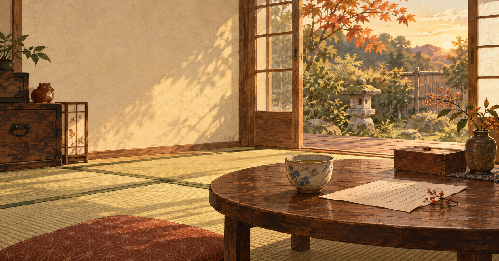

お手紙を書く
フォームから、お名前と相談したいことを送ってください。
MAIL FORTUNE LETTER
縁側でお茶を飲みながら、聞かせておくれ。
恋のこと、仕事のこと、これからのこと。
あなたの言葉を大切に読み、あたたかなメールでお返事します。
お申し込みは約3分。返信はメールでお届けします。
おじい、ただいま手紙を読んでおります。
ABOUT
おじいの文通鑑定は、占いの言葉を借りながら、いまのあなたの心をていねいに見つめるメール鑑定です。ひとりで抱えていた気持ちも、いったん手紙にしてみると、少しだけ輪郭が見えてきます。
湯のみを両手で包むように、安心して書いてくださいな。

HOW IT WORKS
フォームから、お名前と相談したいことを送ってください。
いただいた言葉をもとに、ゆっくり鑑定します。
鑑定結果を、登録いただいたメールアドレスへお送りします。
WHAT YOU RECEIVE
お話を急かさず、ゆっくり読ませてもらいます。
おうちで好きな時間に、何度でも読み返せます。
次の受付を、希望する方だけにお知らせします。